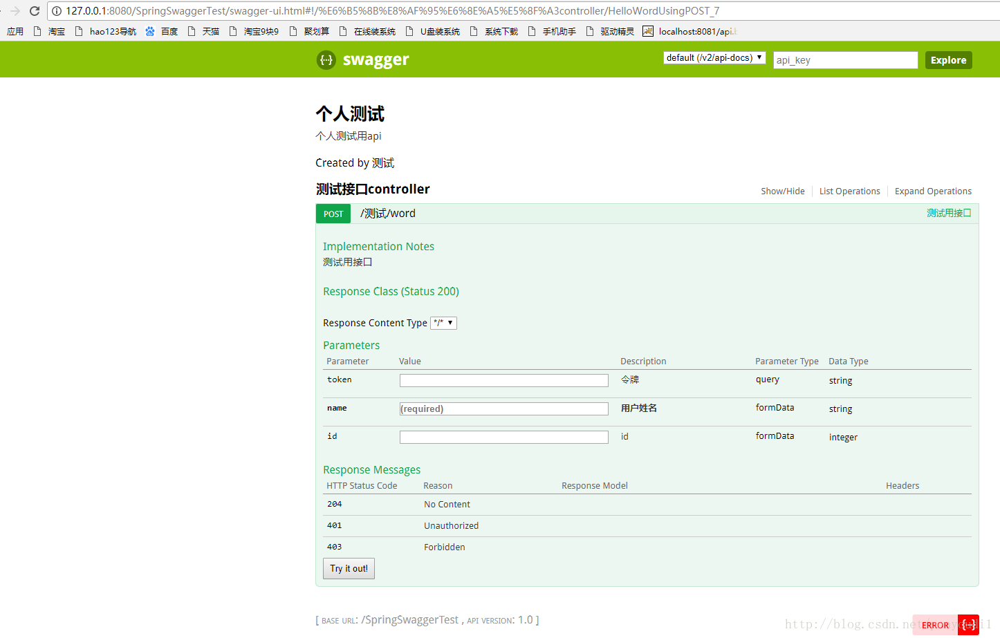
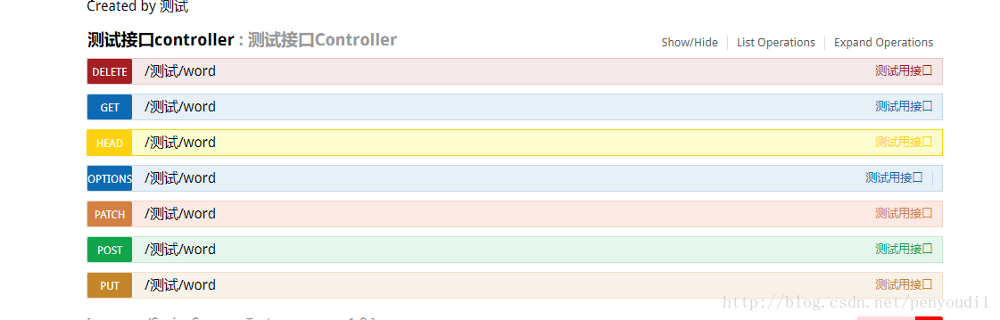
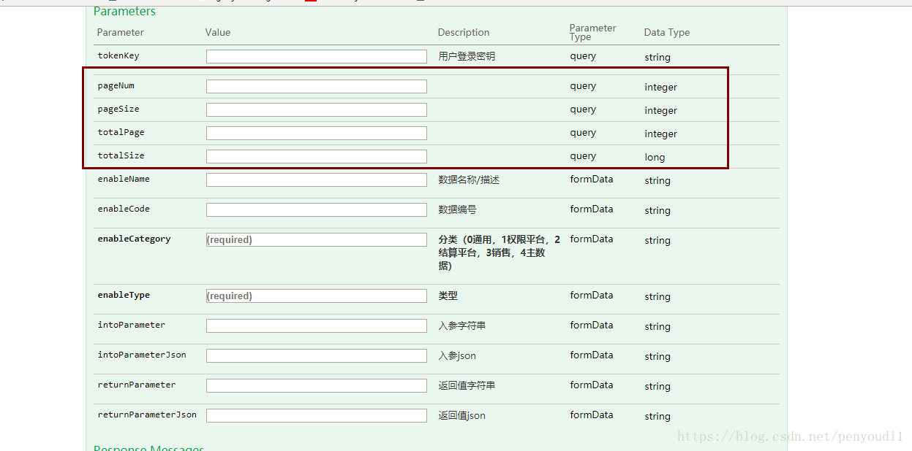
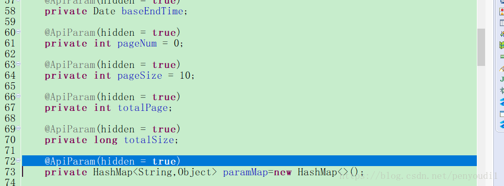
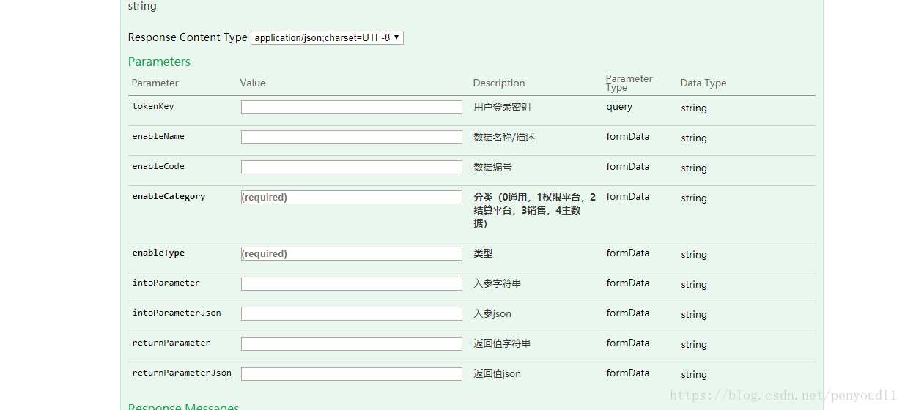
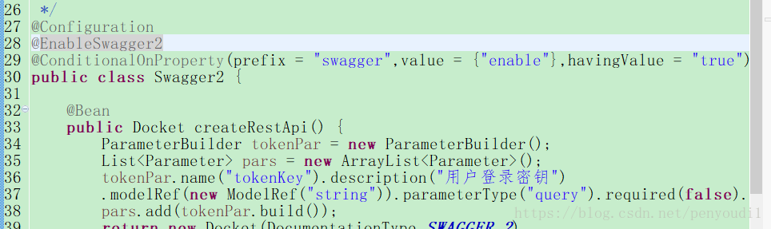
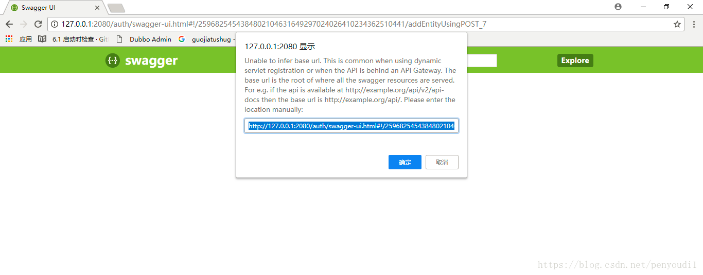

接口文档只有与代码同步，才能真正降低前后端协作成本。
历史工程档案 · Springfox SwaggerWHY SWAGGER
为什么需要 Swagger
本文迁移自 2018 年实践记录，示例使用 Springfox 时代的 Swagger API。依赖版本、访问路径与注解能力应以实际项目版本为准。
前后端分离 后，api接口文档的维护就成了一个让人头疼的问题，api接口更新慢，或因开发工作量大，没时间整理文档，导致前后端分离后前端同学和后端同学都纠结于文档的问题。而swagger的出现，不亚于一道曙光，功能强大，ui简洁美观，提供在线测试，不能说完美，但基本上解决了文档的问题
本此搭建是基于springBoot项目，希望对大家有帮助
官方网站为：http://swagger.io/
MAVEN
引入 Maven 依赖
在maven的pom文件中引入相关的依赖
<dependency>
<groupId>io.springfox</groupId>
<artifactId>springfox-swagger2</artifactId>
<version>2.2.2</version>
</dependency>
<dependency>
<groupId>io.springfox</groupId>
<artifactId>springfox-swagger-ui</artifactId>
<version>2.2.2</version>
</dependency>CONFIGURATION
配置 Swagger
import java.util.ArrayList;
import java.util.List;
import org.springframework.context.annotation.Bean;
import org.springframework.context.annotation.Configuration;
import springfox.documentation.builders.ParameterBuilder;
import springfox.documentation.builders.ApiInfoBuilder;
import springfox.documentation.builders.PathSelectors;
import springfox.documentation.builders.RequestHandlerSelectors;
import springfox.documentation.schema.ModelRef;
import springfox.documentation.service.ApiInfo;
import springfox.documentation.spi.DocumentationType;
import springfox.documentation.spring.web.plugins.Docket;
import springfox.documentation.swagger2.annotations.EnableSwagger2;
import springfox.documentation.service.Parameter;
@Configuration
@EnableSwagger2
public class Swagger2 {
@Bean
public Docket createRestApi() {
ParameterBuilder tokenPar = new ParameterBuilder();
List<Parameter> pars = new ArrayList<Parameter>();
tokenPar.name("token").description("令牌")
.modelRef(new ModelRef("string")).parameterType("query").required(false).build();
pars.add(tokenPar.build());
return new Docket(DocumentationType.SWAGGER_2)
.apiInfo(apiInfo())
.select()
.apis(RequestHandlerSelectors.basePackage("com.sst"))
.paths(PathSelectors.any())
.build().globalOperationParameters(pars) ;
}
@SuppressWarnings("deprecation")
private ApiInfo apiInfo() {
return new ApiInfoBuilder()
.title("个人测试")
.description("个人测试用api")
.termsOfServiceUrl("http://blog.csdn.net/penyoudi1")
.contact("测试")
.version("1.0")
.build();
}
}CONTROLLER
在 Controller 中使用注解
import org.springframework.web.bind.annotation.RequestMapping;
import org.springframework.web.bind.annotation.RestController;
import io.swagger.annotations.Api;
import io.swagger.annotations.ApiImplicitParam;
import io.swagger.annotations.ApiImplicitParams;
import io.swagger.annotations.ApiOperation;
@RestController
@RequestMapping("test")
@Api(value="测试接口Controller")
public class TestController {
@ApiOperation(value="测试用接口", notes="测试用接口" ,httpMethod="POST")
@ApiImplicitParams({
@ApiImplicitParam(name="name", value="用户姓名", dataType = "String", required=true, paramType="form"),
@ApiImplicitParam(name="id", value="id", dataType = "int", required=false, paramType="form")
})
@RequestMapping("word")
public String HelloWord(String name,Integer id) {
return "Hello Word";
}
}然后输入地址 http://127.0.0.1:8080/SpringSwaggerTest/swagger-ui.html
可以查看到

看到这个页面，说明配置成功！！
ANNOTATIONS
常用配置与注解说明
swagger配置文件说明
ParameterBuilder tokenPar = new ParameterBuilder();
List<Parameter> pars = new ArrayList<Parameter>();
tokenPar.name("token").description("令牌")
.modelRef(new ModelRef("string")).parameterType("query").required(false).build();
pars.add(tokenPar.build());这段代码是默认参数，添加上后，所有的接口都会有一个公共参数，不需要在每个接口单独配置
.apis(RequestHandlerSelectors.basePackage("com.sst"))这个是基于基于注解扫描的位置，写到目录最外层即可
return new ApiInfoBuilder()
.title("个人测试")
.description("个人测试用api")
.termsOfServiceUrl("http://blog.csdn.net/penyoudi1")
.contact("测试")
.version("1.0")
.build();
}这个是一些页面展示数据的配置，用于标题，分组说明等
controller注解说明
@Api(value="测试接口Controller")这个注解用于整个 类 上，对整个类中的接口列表进行简单说明
@ApiOperation(value="测试用接口", notes="测试用接口" ,httpMethod="POST")value 和notes都是对接口的说明，是显示的位置不一样
httpMethod 是接口的提交方法，如果不写的话swagger会把所有的提交方式都展示一遍就像这样

@ApiImplicitParams({
@ApiImplicitParam(name="name", value="用户姓名", dataType = "String", required=true, paramType="form"),
@ApiImplicitParam(name="id", value="id", dataType = "int", required=false, paramType="form")
})@ApiImplicitParams是传入参数的集合，里面可以包含多个参数
@ApiImplicitParam(name="name", value="用户姓名", dataType = "String", required=true, paramType=" form "),
name是参数的名称，value是参数的说明，dataType是参数的类型，前端不是限制，仅做说明使用，required true时是必传参数，false是选填参数。paramType是提交方式=-= 好像都是写的from
以上就是基本的使用的参数说明
TROUBLESHOOTING
使用中遇到的问题
1.在开发中遇到过，使用swagger做excel导出中文乱码的问题，尚未解决，如果你也遇到了，可以单独访问下接口，尝试下是否是swagger本身的问题
PRODUCTION SAFETY
隐藏字段与生产环境关闭
在实际开发中遇到过两个问题都已经处理，希望给其他同学提供帮助
1.当传入的参数用对象接的时候，swagger会将对象中的信息都展示出来当做传参，虽不影响使用，但容易混淆

这个时候可以在具体的实体类上追加一段注解，将对象所包含的属性默认隐藏

@ApiParam(hidden = true)添加完成后当你不在controller配置的话，这些属性不会展示到swagger中

2.swagger在开发过程中好用，但是生产环境下必须屏蔽swagger，不然很容易让人利用swagger执行对库操作，安全隐患非常大，在springboot下可以通过多环境的yml配置文件来屏蔽生产环境下swagger的使用，具体配置如下：

在swagger的配置文件上加一行注解
@ConditionalOnProperty(prefix = "swagger",value = {"enable"},havingValue = "true")然后再yml文件中配置：
swagger:
enable: true生产环境下将true改为false这样swagger就不再展示

MIGRATION & SOURCE
迁移说明与原始来源
本文由本地保存的 CSDN 正文迁移而来，保留原始实践步骤、代码与截图，并对标题层级、段落和版本提示进行了重新整理。
《Swagger 搭建（基于 Spring Boot）》，原发布于 2018-01-22。示例环境与结论应结合文章中的版本背景阅读。
查看 CSDN 原文 ↗让接口文档跟随代码一起演进